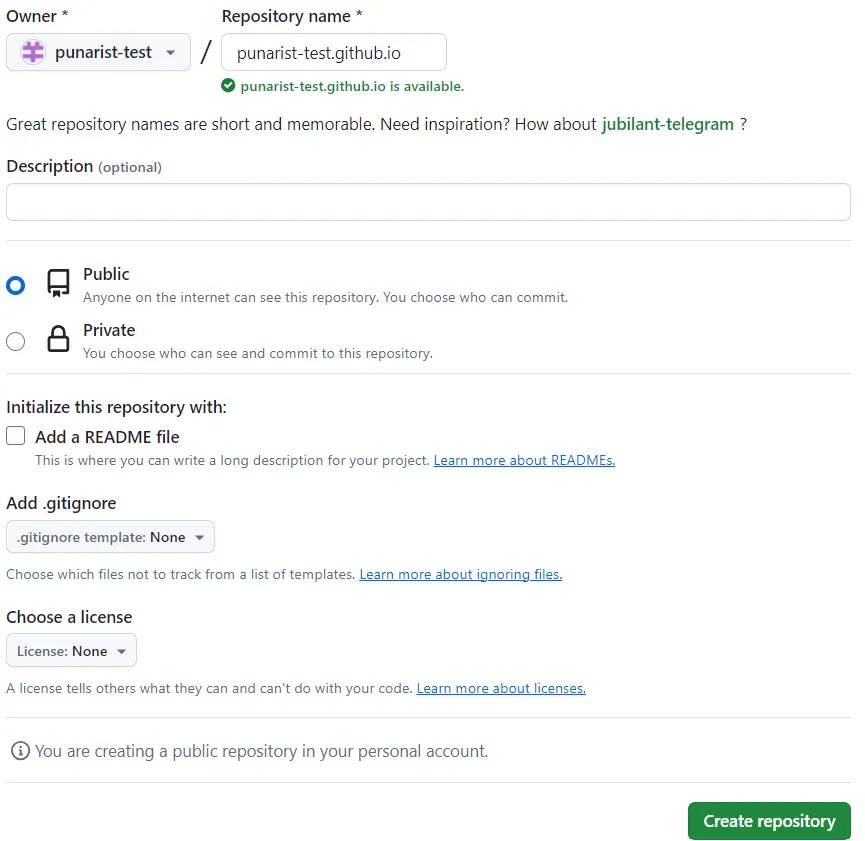
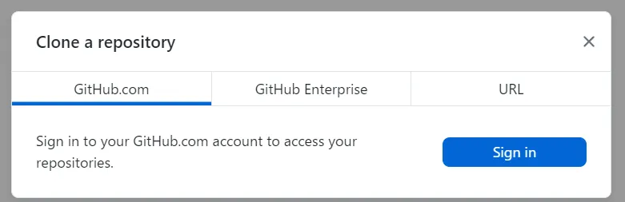
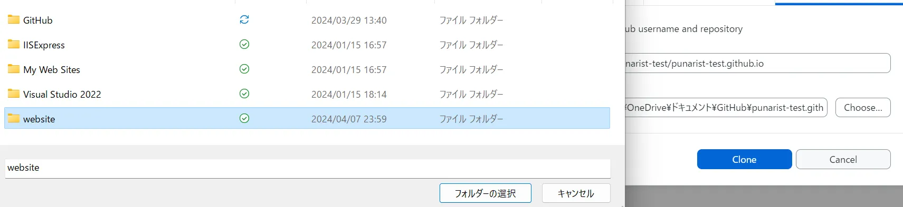
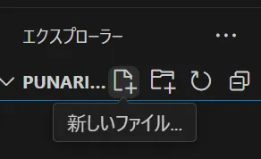
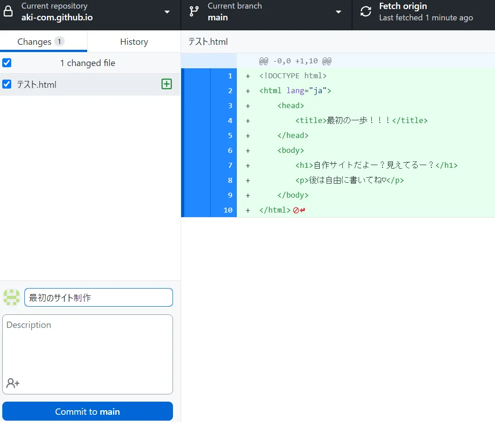

Github Pagesを使ってブログを書いてみる①
Githubアカウントからサイト開設まで
まずはこんにちは。こちらぷなリストではgithub pagesでサイトを運営します。自己紹介はこれくらいにして、、、
本題です。ブログを書きたい！！と思ったことありませんか？
また、調べたらサーバー代がかかると書かれていて諦めたことはありませんか？
私はありましたよ。高2の冬に・・・
そんなあなたに朗報です。Github Pagesを使えば無料でサイトを運営できます。
WordPressも使いません。サーバーを借りることもありません。
今回はgithubアカウントからサイト開設までをお届けします！
1. Githubアカウント作成
まずはGithubアカウントを作成しましょう。
以下のリンクからGithubのサイトにアクセスしてください。
Githubアカウント作成ページ- メールアドレス→パスワード→ユーザー名の順に入力。次へ進む
この時に決めたユーザー名が基本的にサイトのドメインになる
- ボット対策のテストを行う。次へ進む
- メールに認証コードが届くので入力。次に進む
- その後も入力事項はあるが、重要ではないため一度タブを落としてしまう。
github.com←ここから開きなおしてログインできていたら成功。
できていなかったら先ほど作成したアカウントでログインする。

この画面が出たらアカウント作成完了です！
2. リポジトリ作成
Githubアカウントを作成したらいよいよサイトの前準備に入ります！
- 上記の画像にもあるgithub.comの左側の緑色の「Create repository」をクリック
- リポジトリ名は「"ユーザー名".github.io」にします（重要）
- Public/PrivateはPublicを選んでください（重要）
Public/Privateの意味
Publicにすると自分がGithubに上げたファイルを"公開"するという意味です。（操作もできる）
逆にPrivateにすると他人からファイルに干渉することはできません。
無料ユーザーにページ作成機能を提供しているのはPublicのみなので今回はPublicで行います。
例）↓ユーザー名が「punarist-test」の場合
 - 右下の緑の「Create repository」をクリック
これでネット側の設定は整いました！
3. PCセットアップ
次にPC側のセットアップです。
ダウンロードページにアクセスし、ダウンロードをクリック
- ファイル、フォルダを確認しやすい！
- 理論上どんなプログラムも動く！
- github copilot(コードを書くAI)が使える！（学生以外有料）
- windowsユーザーもmacユーザーもよく使う！
- それぞれのsetup.exe がダウンロードされたと思うので開いてアプリケーションをインストールします。（mac版は飛ばす）
-
完了したらGithub Desktopを開いて「Clone a repository」→「Sign in」をクリックしてログイン
 - すると、先ほど作成した「"ユーザー名"/"ユーザー名".githun.io」（←リポジトリ名と呼ぶ）という表記があると思うので選択、下のほうにある「Clone "リポジトリ名"」をクリック
-
そうすると、
- repository
- Local path
という項目が出るのでLocal pathだけ変えます。（Chooseで簡単にファイル指定）
Local pathについて
PC内で保存する場所を決めます
具体的な場所ですが、おすすめはDocumentsもしくはドキュメントに「website」というフォルダを作成してその中に保存することをお勧めします。
 - 「Clone」をクリック
ダウンロード中にご覧ください↓
Github Desktopとは？
Gitを使いやすくするためのソフトウェア
github desktopは、簡単に言えばgithub(開発者用クラウドストレージのようなもの)に1クリックでアクセスすることができるアプリです。
本来、githubはコマンドで操作するので初心者が扱えるものじゃないんですがこのアプリを使うとそれが解決します。（githubの使い方を調べると頭がパンクすると思います）
VScodeとは？
このソフト上でコードを書きます。
という利点があり、VScodeを使用します。
これで全ての準備が整いました！残りはhtmlを作成して終わりです！
4. サイト公開
最後にサイトを公開します！
-
VScodeを開いて「フォルダを開く」→Cloneで指定したフォルダの中に「"ユーザー名".github.io"」というフォルダが作成されているのでそれを選択
例）「ドキュメント」→「website」→「"ユーザー名.github.io"」
-
"Ctrl+Shift+E"を押してフォルダを表示、ファイルを作成
 - 「テスト.html」というファイルを作成(ファイルの名前がURLになる)、以下のコードを入力
- 「F5キー」を押して「Webアプリ(Edge)」で実行＆セーブができる
-
Github Desktopを開いて、更新内容を記載
 - 左下の「Commit to main」をクリック→右上の「Fetch origin」をクリック
<!DOCTYPE html>
<html lang="ja">
<head>
<title>最初の一歩！！！</title>
</head>
<body>
<h1>自作サイトだよー？見えてるー？</h1>
<p>後は自由に書いてね♡</p>
</body>
</html>
これでサイトが公開されました！
5. 最後に
あとは1～5分ほど待って「https://"ユーザー名".github.io/テスト.html」をURLの欄に打ち込めばページが表示されると思います。
土台は終わったのでここから先は己の努力次第でどんなこともできます。
ウェブサイト作成のコツは色々なサイトを見て構造を理解し、実現させるために研究することです
不具合が出れば大体20時間くらいで解決できると思うので粘りましょう！
今後も私が詰まった部分をブログとして書きたいと思うので参考になれば幸いです。
質問があれば以下のコメント欄にお願いします！（別ページに飛ばされる不具合あり。送信はできます）